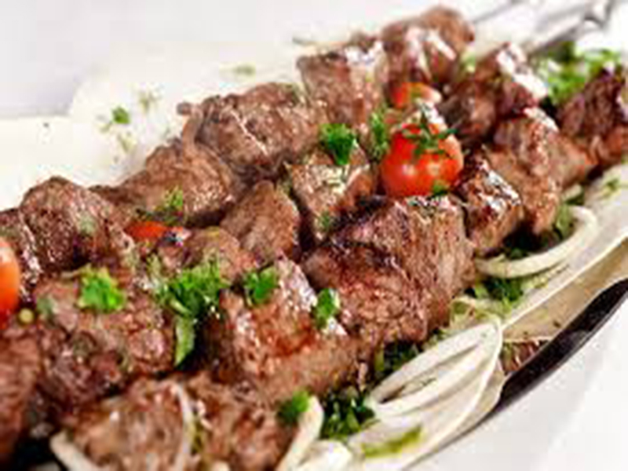

Resep Beef Shashlik)

Shashlik atau shashlyk, adalah sebuah bentuk dari Shish kebab yang populer di Eropa Timur dan Tengah, kawasan Baltik di Eropa Timur, Kaukasus, Asia Tengah, Afghanistan, India, Iran, Israel, Iraq, Mongolia, Maroko, Pakistan, Turkey, Bangladesh dan tempat lainnya. Shashlik aslinya dibuat dari daging domba.
Bahan:
- 1 kg daging has dalam sapi.
- 1 buah paprika merah.
- 1 buah paprika hijau.
- 1 buah paprika kuning.
- 1 butir bawang bombay.
- 2 sdm mentega, untuk olesan.
- 250 ml minyak sayur.
- 1/2 buah nanas, parut.
- 50 ml air jeruk lemon.
- 1 sdm rosemary.
- 1/2 sdt lada hitam.
- 1 sdt garam.
Cara Membuat:
- Aduk semua bahan hingga rata.
- Potong-potong daging sapi ukuran 2x2 cm.
- Rendam potongan daging dalam bumbu. Diamkan selama 30 menit.
- Potong-potong paprika dan bawang bombay ukuran 2x2 cm.
- Tusuki potongan daging, berselang-seling dengan paprika dan bawang bombay.
- Panggang di atas pangangan arang atau wajan besi sambil olesi sisa bumbu perendam dan beri sedikit mentega.
- Balik-balik hingga matang kedua sisinya.
- Angkat dan sajikan hangat.